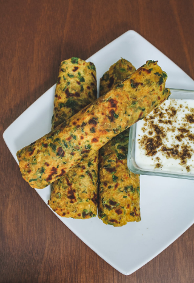

Methi Paratha
Ingredients
- 1 cup whole wheat flour
- 1/2 cup fresh fenugreek leaves (methi), finely chopped
- 1/4 cup yogurt
- 1 tablespoon oil
- 1 teaspoon turmeric powder
- 1 teaspoon red chili powder
- 1 teaspoon cumin seeds
- 1/2 teaspoon carom seeds (ajwain)
- Salt to taste
- Water, as needed for kneading
- Oil or ghee for cooking

Cooking Process
- In a mixing bowl, combine the whole wheat flour, chopped fenugreek leaves, yogurt, oil, turmeric powder, red chili powder, cumin seeds, carom seeds, and salt.
- Mix everything well and add water as needed to knead a soft dough. Cover and let the dough rest for 15-20 minutes.
- Divide the dough into equal-sized balls. Roll each ball into a small circle, place a little oil or ghee in the center, fold, and roll again into a paratha.
- Heat a tawa or skillet over medium heat. Cook the paratha on both sides until golden brown, applying oil or ghee as needed.
- Repeat the process with the remaining dough balls. Serve the methi paratha hot with yogurt, butter, or pickle.
Nutritional Information (per serving)
- Calories: 180 kcal
- Protein: 5g
- Carbohydrates: 25g
- Fat: 6g
- Fiber: 3g
- Sodium: 240mg
Cooking Tips & Tricks
- For a healthier version, use less oil or ghee while cooking the paratha.
- Always finely chop the methi leaves to ensure they mix well with the dough and do not tear the paratha while rolling.
- If the dough becomes too sticky, add a little more flour to make it easier to roll.
- Letting the dough rest ensures softer parathas. Don't skip this step!
- Use fresh methi leaves for a more flavorful paratha, but if unavailable, dried fenugreek leaves (kasuri methi) can be used in smaller quantities.